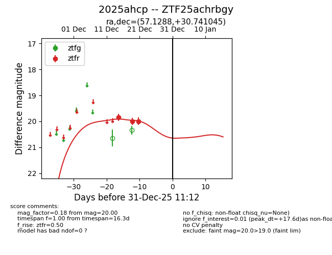
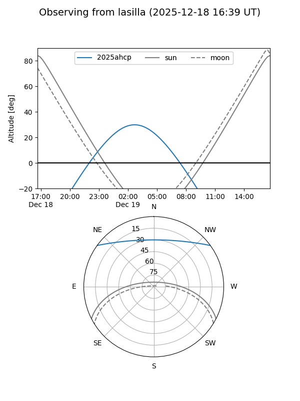
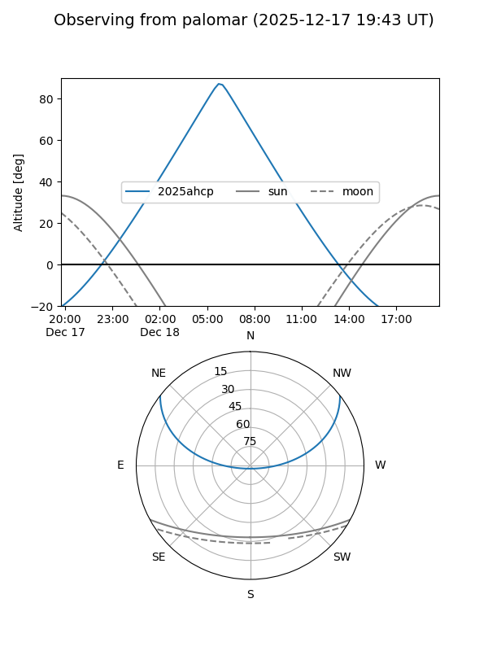
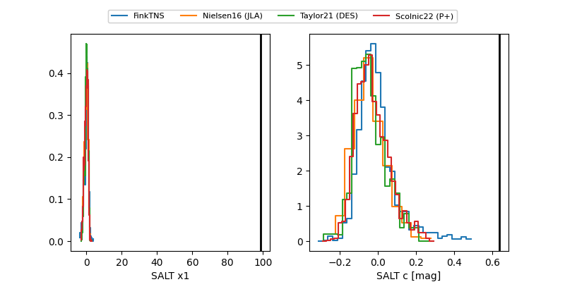

2025ahcp
Target 2025ahcp at 2025-12-31 18:00
Aliases and brokers:
FINK: link
Lasair: link
ALeRCE: link
TNS: link
YSE: link
alt names
ZTF25achrbgy (ztf,fink_ztf)
2025ahcp (tns,yse)
Coordinates:
equatorial (ra, dec) = 57.1288,+30.74104
equatorial (HMS+DMS) = 03:48:30.90,+30:44:27.76
galactic (l, b) = (162.1338,-18.34046)
Flags:
Photometry:
last ztfr=20.00
3 ztfr detections
Lightcurve

Visibility


Additional plots
